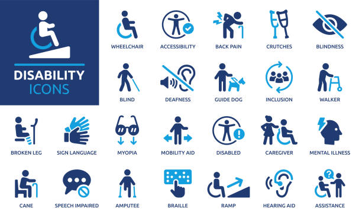
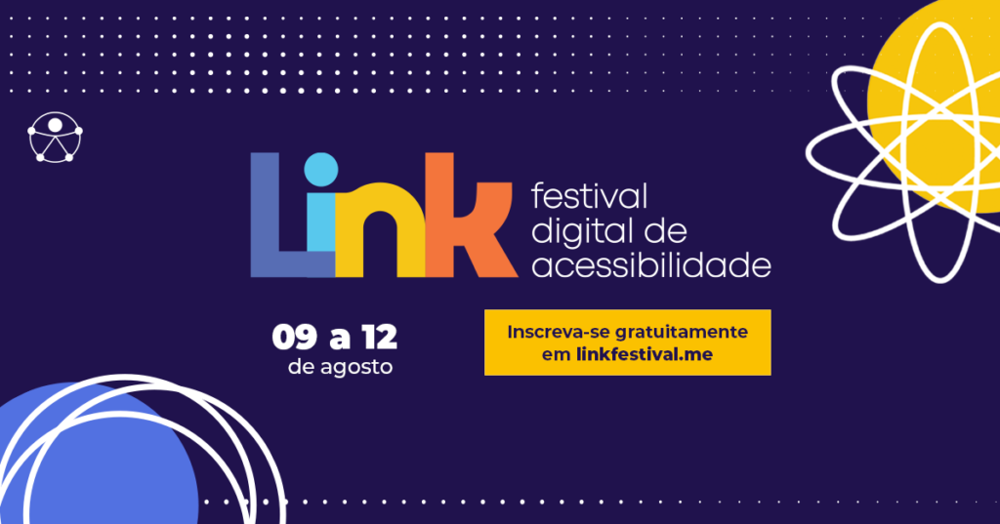

Biografia
Sou Licenciada em Informatica,bacharel em Processamento de Dados e licenciada em Matemática. Ensino programação e robótica para os estudantes do fundamental,pensamento computacional para estudantes do Ensino Médio e matemática II(programação) para os estudantes do ensino médio.
Glossário de Acessibilidade
O que é Acessibilidade digital?
Acessibilidade Digital é a eliminação de barreiras na Web. O conceito pressupõe que os sites e portais sejam projetados de modo que todas as pessoas possam perceber, entender, navegar e interagir de maneira efetiva com as páginas.

Glossário de Acessibilidade
festival digital de acessibilidade
A inclusão digital acontece agora e aqui!
O Link Festival chega à sua 9ª edição como o maior festival de acessibilidade digital da América Latina.
São dois dias de conexões, tendências e debates que transformam tecnologia em inclusão real. 100% gratuito. Híbrido. Acessível.
Seja protagonista dessa mudança.
festival digital de acessibilidade
